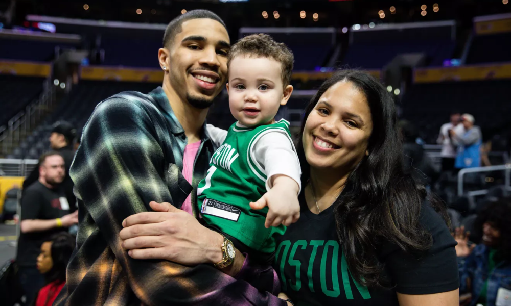
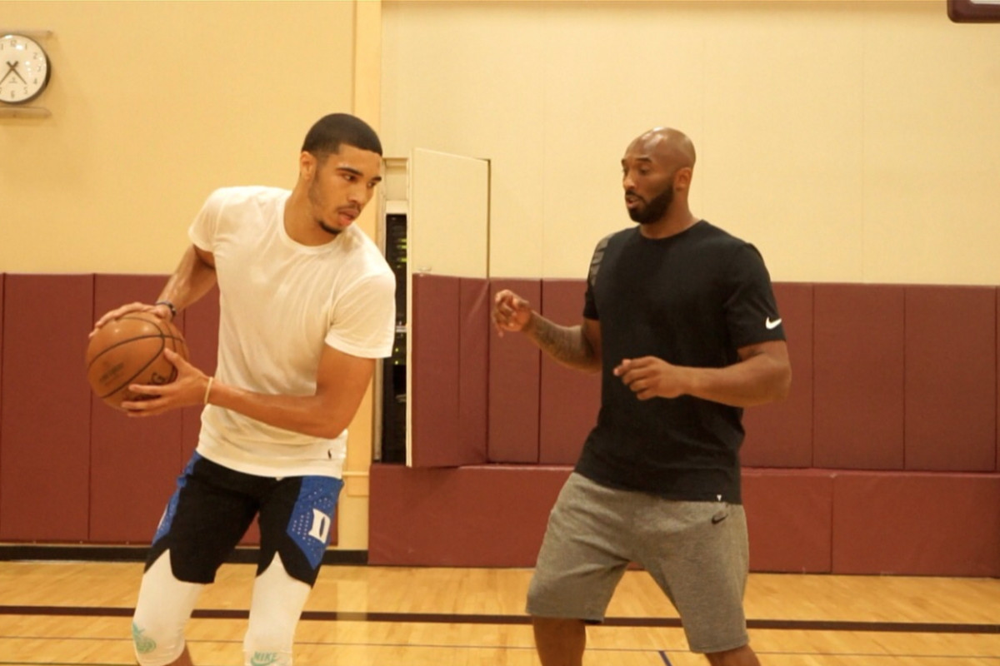
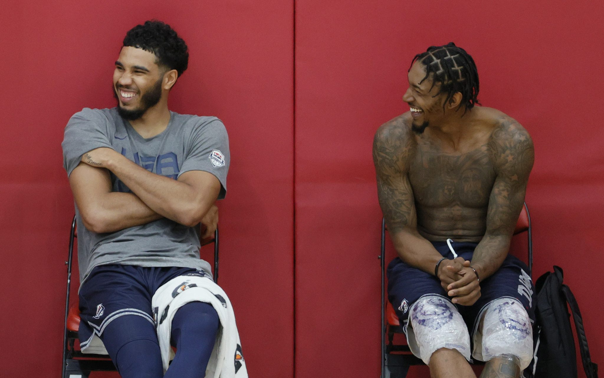

W alking through the tunnels of the storied TD Garden with his son, photos snapping and media swarming, it suddenly hits.
This is real. This is actually happening.
“This shit is crazy.”
It’s Game 2 of the Eastern Conference Finals. Justin Tatum is at the arena early, now staring at his son as he goes through warm-ups, allowing the moment to sink in, feeling the weight of all of it.
For the past few weeks, Jayson Tatum has been at the forefront of a remarkable Celtics playoff run. He’s still a rookie. He’s merely 20 years old.
“He gave it his all, and very few people do that in life. He’s one of them that did and as a result is getting rewarded.”
To stroll the packed hallways and watch as the seats fill up with fans, many of whom are wearing jerseys with the name Tatum on it, is an experience Justin describes as “surreal.”
“But, I mean, I guess I knew I was going to do it one day,” the father adds. “Because Jayson told me I would.”
“There were veterinarians, doctors, teachers, nurses, dentists.”
Jayson is reminiscing on an assignment from the second grade, one that sticks out vividly in his memory. Write a paragraph on what you want to be as an adult and share it with the class.
“I was like, I want to be in the NBA, and everybody kind of laughed at me,” he says. Even the teacher encouraged him to choose something else, suggesting the goal was unattainable.
It was a dream born before Jayson could even talk, when he used to tag along to his father’s games at Saint Louis University as a toddler. Justin played a key role on a Billikens team that won the conference championship in 2000 and went on to pursue a brief career overseas.
Jayson actually lived with his mom, Brandy Cole, in a small, two-bedroom house in University City, a suburb of St. Louis. She was a college freshman when she had him, working toward her undergraduate degree at Missouri-St. Louis and taking up various jobs to make ends meet. Food was sometimes scarce. Utilities would sometimes be cut off. They learned to adapt to the circumstances, sharing little meals and cuddling up near a space heater whenever the gas went out.
Though not together, Brandy and Justin did whatever they could to support their son’s passion for basketball—a passion that dates back to his very first taste of competition in a YMCA league at age 3.
“We would cause quite a stir because he just wanted to play so bad,” Brandy says of the early days. “We might play with one team in the morning out west in the county, then drive 45 minutes and maybe cross over into Illinois to play with another team in the afternoon or evening. I probably have 50 different jerseys from when he was young. We would just switch ’em out and go play with another team. He just loved it so much.”
Once Justin returned to St. Louis from overseas, he landed a coaching job at Soldan High School. By the time Jayson was 9 or 10, he was coming to practice and running with the varsity squad.
“I just remember he would do things that you couldn’t teach,” Brandy says. “You would hear the oohs and aahs. He would do things that would even blow Justin and me away. And we’d be like, Where did he learn that from? ”
Brandy had half-expected to be denied when she sent the text to trainer Drew Hanlen, asking if her 13-year-old boy could begin sessions with him. Hanlen’s client base consisted of pros or elite players with NBA potential—not skinny, unproven eighth graders.
The answer was no. He was too young. Not ready. Couldn’t tackle the advanced concepts or endure the physical strain.
But Brandy wouldn’t quit. She called Bradley Beal, a friend of the family who grew up a few blocks away from them. Beal had been working out with Drew and was then preparing for his rookie season with the Washington Wizards.
“Can you vouch for him?” she pled. Beal’s message to Hanlen was brief, yet convincing: My little brother Jayson is going to be special.
So Drew consented. He would give the kid a chance, but the initial session would be a test. And surely Jayson wouldn’t last.
“I absolutely destroyed him,” Drew recalls. “I almost tried to make him pass out. Like he was literally on the floor, almost dying.”
The second it was over and Jayson was comfortably slouched in his aunt’s car, he called his mom. I wanted to die, but I wasn’t going to quit, he told her. I would’ve passed out and fainted before I quit.
“That’s when I knew he had the mentality,” Hanlen says. A mentality inspired by his parents’ fortitude and bolstered by his basketball idol, Kobe Bryant.
"If I wanted to be the best, I’d have to do everything he did and some."
Jayson’s unwavering love for the game cannot be detached from the Mamba. He rocked Kobe’s shoes and apparel, knew entire stat lines by heart, would study his YouTube clips like they were textbooks and tried to emulate moves as young as the fourth grade. It was an obsession.
“How bad he wanted to be the best and how hard he worked at it really inspired me,” Tatum says.
He repeatedly told Brandy: I want to be Kobe.
You mean you want to be an NBA player?
No, I want to be Kobe.
Well, you can’t be Kobe. Kobe is Kobe. Why don’t you be better than Kobe?
And Jayson would look at Brandy like she had lost her mind.
To be anything like Kobe, Tatum had to focus on the nuances. He and Drew dedicated an entire week to breaking down Bryant’s jab step. Workouts over that time didn’t involve a single shot. They arrived at the gym, examined the footage and replicated the motion again and again, honing in on every minute detail until it was seamless.
That was a start.
Jayson did the same thing with several of his other role models, analyzing and applying their effective moves to his own game. Paul George’s skill on the perimeter. Carmelo Anthony’s ability in the mid-post. The list goes on. Those tools were constantly refined as Hanlen threw him in the mix with the rest of his clients.
“Before he even had his permit, he was playing against pro guys,” Drew tells us. “There were some days when he took a beating and other days when he hung tough, but the thing that we saw was year after year, he kept improving, kept hanging around longer and all my guys knew he was going to be special just because of the work that he put in.”
He was going to be special. It’s the same sense that seemingly all who crossed paths with Jayson got.
“If this kid keeps working, he’s definitely going to get to the League,” Will Gladson, Tatum’s friend and former high school teammate, remembers thinking. “And he’s definitely going to keep working.”
Will would pull up to Chaminade Prep early, before class, to get shots up, only to find that Jayson was already finishing his morning drills.
Tatum was at the gym around 5:30 a.m. every day. He had his own key and would be the one to turn the lights on. During his four years at Chaminade, head coach Frank Bennett insists he took just two days off—the two days following their state championship victory his senior season.
Nobody ever pushed Tatum to pursue basketball so intensely. There were instances, rather, when Brandy worried that her son was doing too much. At 14, he started to develop tendinitis in his knee.
“We went and got it looked at and everything, and it was just normal overuse,” Brandy explains. “So I told him, You need to rest your body.”
She encouraged Jayson to scale back a bit, recognizing it to be a futile effort. After like 48 hours, he began to go crazy.
“You would’ve thought that he was in solitary confinement or something. He was acting like he was going to lose it,” Brandy says.
It all makes sense once you understand that in Jayson’s eyes, making it to the NBA wasn’t just the best-case scenario. It was the only scenario.
“I forget where, but Kobe was talking and he was saying that his whole life, he put all his eggs in one basket. If you have that mindset, that there’s no plan B, there’s no backup plan, then you’ll do anything to make that first plan work,” Jayson says. “I took that to heart. I made a promise to myself that I was going to make it work.”
Combine that mindset with his ferocious work ethic and you get this: a National Gatorade POY award, the most points and rebounds in Chaminade history and a scholarship to Duke.
There was a time when Jayson would attend recruiting camps and the other guys would tease him about his hometown. Y’all play basketball in St. Louis? With each accomplishment, Tatum took pride in helping to put his city on the map, following in the footsteps of his mentor, Bradley Beal.
When Beal was a senior at Chaminade, he used to drop Jayson off at the middle school on a daily basis. The two would hang out during the NBA offseason once Beal joined the Wizards, cruising around the neighborhood and making frequent visits to Imo’s, a St. Louis staple that serves Tatum’s favorite pizza in the world.
Beal always pushed Jayson to be the best player to come out of the city, even if that meant surpassing him.
“He accomplished a lot,” Tatum says. “I felt like if I wanted to be the best, I’d have to do everything he did and some.”
Off the court, Jayson is laid back, even-keeled and a little quiet. Some of those attributes carry over to the floor. He never gets too high or too low. The adrenaline never derails him, nor do the mistakes. He stays relaxed and level-headed. Always focused on the next possession.
Yet there is a switch—one that renders the on-court Tatum distinct.
“I am very arrogant. I have this thought inside my head when I step on the floor,” Tatum pauses for a second and smiles. “I feel good about myself.”
“There’s a competitiveness in him that I don’t understand where it came from,” his father says. “I know it’s my passion for coaching and his mom’s drive and what she does and the structure she gives. I don’t know if all that combined in him, but he doesn’t care who you are or what stage it is or where you’re at. He doesn’t care if he has flip-flops on—he’s going to go at you. He doesn’t care if it’s in front of 20,000 people or if it’s the NBA Finals.”
Tatum made the stage at one of the most historic college programs in the country look small, averaging 16.8 points and 7.3 rebounds in his sole season with the Blue Devils. He’s doing the same thing now on one of the most historic NBA franchises.
After the Celtics selected him with the No. 3 pick in the 2017 draft, Tatum posted 13.9 points and 5.0 rebounds on 48 percent shooting from the field and 44 percent from deep in his first year. He took it to another level in the playoffs, dropping a team-high 18.5 points per game to lead Boston just shy of the Finals.
As a rookie. As a 20-year-old.
When he plays, you can clearly spot signs of the work he’s put in. There’s that jab step and blow by, shades of Kobe. A crossover and quick trigger three-pointer, shades of PG. A turnaround jumper on the mid-post, shades of Melo. For someone his age, Tatum is as polished a scorer as you’ll see. And it is not a coincidence.
“He gave it his all and very few people do that in life,” Bennett says. “He’s one of them that did and as a result is getting rewarded.”
Rewards that are only going to increase over time.
“After last season, instead of just making it to the NBA, I feel like I can do some special things while I’m in the League,” Tatum says.
Of course, he has to keep working. But to even consider that he wouldn’t is to ignore everything there is to grasp about Jayson Tatum.
Leaned up against a small stage in the Pan Pacific rec gym in Los Angeles, wearing his clean white Celtics uniform, Jayson flips through the latest KICKS issue. His barber from St. Louis is here, the same one he’s had for the last 11 years, lounging in a nearby chair. Besides the background noise of Travis Scott’s Astroworld emanating faintly from a handheld speaker, it is quiet and peaceful—a stark contrast to the bustling streets of L.A. Jayson samples some of the pizza we ordered. It’s alright. Nothing like Imo’s, though.
Throughout the afternoon shoot, we ask him to throw on a band-aid as a tribute to St. Louis legend Nelly, and he happily obliges. We ask him to re-create a picture of Kobe, and he doesn’t hesitate. After all, these are nods to what brought him here, to this very moment.
Stacked up in the basement of the Tatum household are old issues of SLAM Magazine. Iconic covers piled one on top of another serve as reminders of the forces that inspired Jayson to realize his own dream.
To be an NBA player. To be on his own cover.
“Man, it means everything,” Tatum says. “I’m not one to ever take anything for granted. It’s one thing to say you want to be on SLAM one day, but it’s a different feeling when it actually happens.”
That feeling may be surreal—to finally hold the magazine in his hands and flip through the glossy pages—yet anyone who has ever known Jayson can’t say it’s a huge surprise. He was bound to be here. There was no other option.
Alex Squadron is an Associate Editor at SLAM. Follow him on Twitter @asquad510.